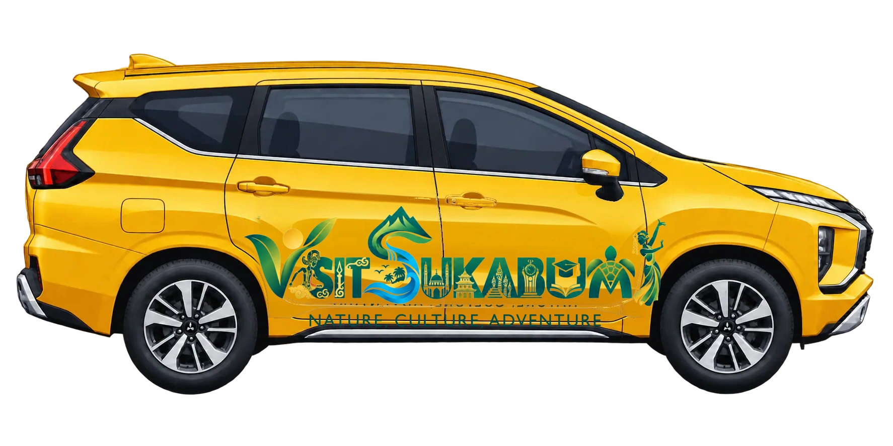

Keluar dari riuhnya ibu kota
Gedung-gedung perlahan tertinggal. Di depan, jalur selatan Jawa Barat mengantar kita menuju bentang alam yang berbeda.
JAKARTASUKABUMI
VISUAL INTERAKTIF PARIWISATA
Mulai perjalanan dari Jakarta, lewati gerbang utara Sukabumi, lalu temukan pegunungan, pantai, dan cerita di sepanjang jalan.
♪ Cerita ini dilengkapi dengan audio
ROAD TRIP FROM JAKARTA
Satu perjalanan. Beragam cerita.
Gedung-gedung perlahan tertinggal. Di depan, jalur selatan Jawa Barat mengantar kita menuju bentang alam yang berbeda.
Mitsubishi Xpander menjadi teman perjalanan keluarga dari kota, pegunungan, hingga pesisir selatan.
Di sinilah Sukabumi menyambut perjalanan dari arah Jakarta dan Bogor. Udara mulai sejuk, bukit mulai mendekat.
Jeda sejenak di pusat kota untuk mencicipi kuliner, mencari oleh-oleh, dan merasakan denyut Sukabumi sebelum melanjutkan perjalanan.
Jalur menuju Kadudampit membawa Anda ke hutan pegunungan, danau, curug, serta jembatan gantung yang ikonik.
Jelajahi kawasan ↗Jalan terus turun menuju teluk, ombak Samudra Hindia, hidangan laut, dan matahari terbenam di pesisir Sukabumi.
Air terjun, tebing, pantai, dan bentang geologi menyusun perjalanan yang terasa seperti memasuki dunia lain.
PILIH CERITA ANDA
